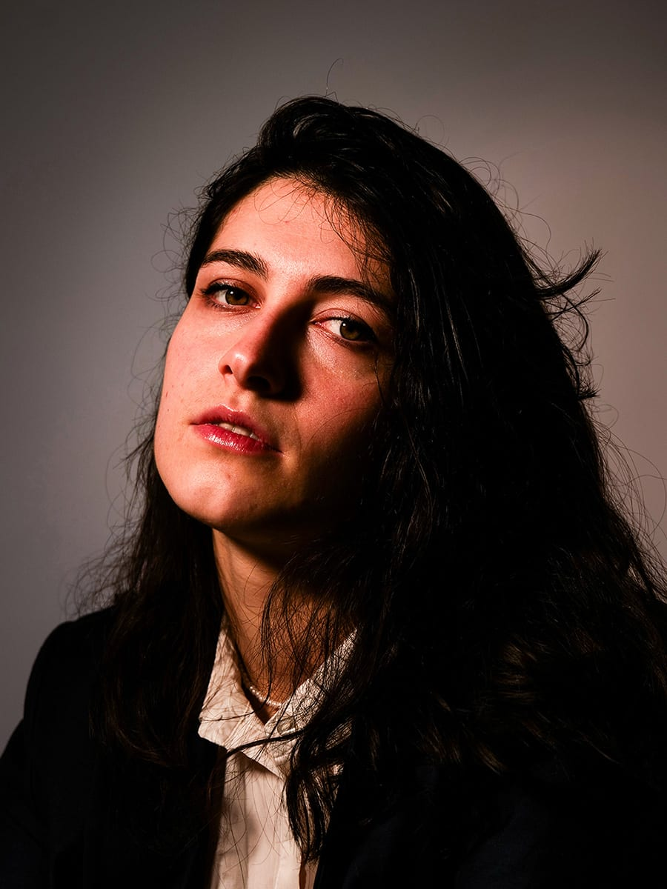
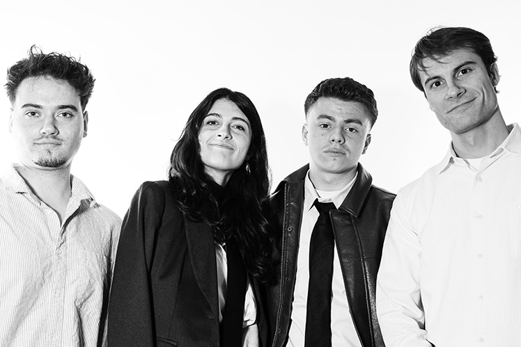
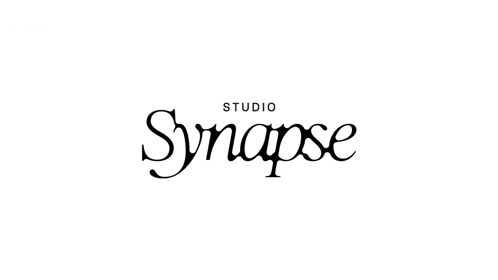
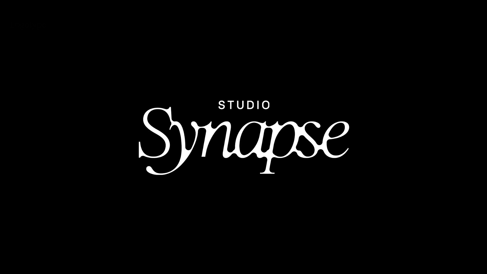
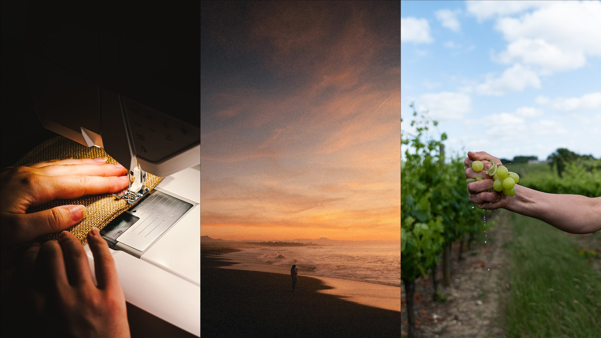
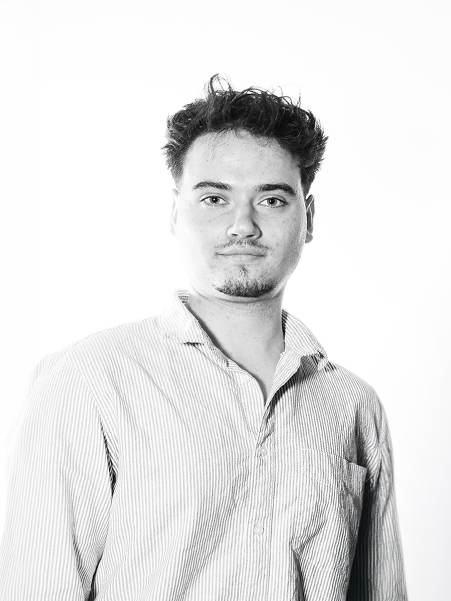
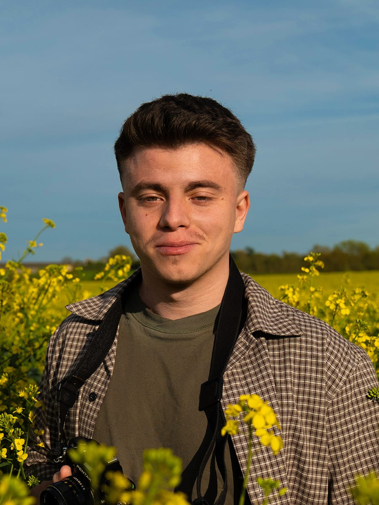
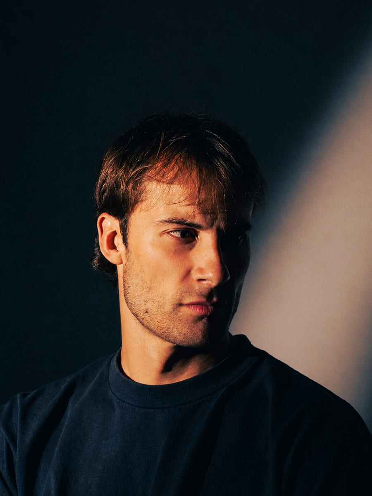

Natacha
Illustration · Print
Édition · Packaging
Synapse Studio
Synapse Studio est un studio graphique imaginé lors de ma deuxième année de Master DA, pour se positionner en tant que studio prenant en charge des projets clients bien réels.

Synapse Studio est un collectif de quatre étudiants
en Master de Direction Artistique à l'EEGP Angers : Thomas Bonneau, Natascha Borch, Jérémy Rambaud et Paul Meslet.
Le studio est né d'un cadre pédagogique exigeant : monter une véritable structure, démarcher de vrais clients et mener chaque projet comme un studio professionnel, avec allers-retours, itérations
et validations réelles. Trois commanditaires nous ont fait confiance sur cette année : Arch'ocktail, Grapillon
et Malbec Coffee, que nous avons accompagnés
dans la création de leur identité.
Synapse vise le haut de gamme, dans la lignée de collectifs comme Violaine & Jérémy, l'Atelier Deux-Cé ou Studio Heyllo. Le studio défend une approche narrative, portée par l'histoire de chaque commanditaire, et fait de l'artisanat une valeur centrale.
Synapse (n.f.) zone de contact, d'échange et de transmission entre plusieurs éléments.



L'artisanat structure notre pratique. Chaque projet est pensé comme un objet unique, à la mesure de son commanditaire.
Dans cette continuité, nous réalisons nous-mêmes ce que le projet demande : photographies, illustrations,
et typographies quand elles s'imposent. Chaque brique est produite en interne dès qu'elle sert l'identité,
plutôt que puisée dans des banques par défaut. Faire soi-même rend chaque identité irremplaçable.

Illustration · Print
Édition · Packaging

Identité · Illustration
Print · Web

Photo · Vidéo
Motion · Illustration
Conceptualisation

Motion · Identité
Print · Illustration